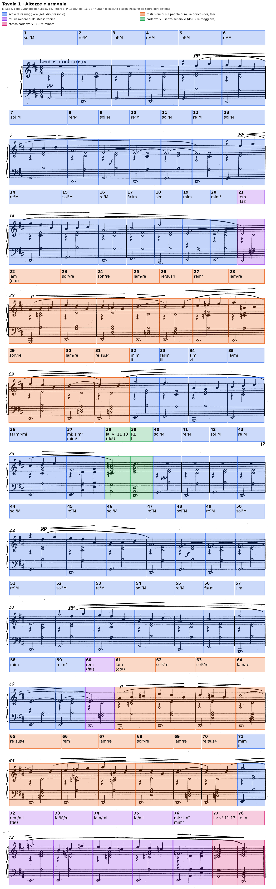
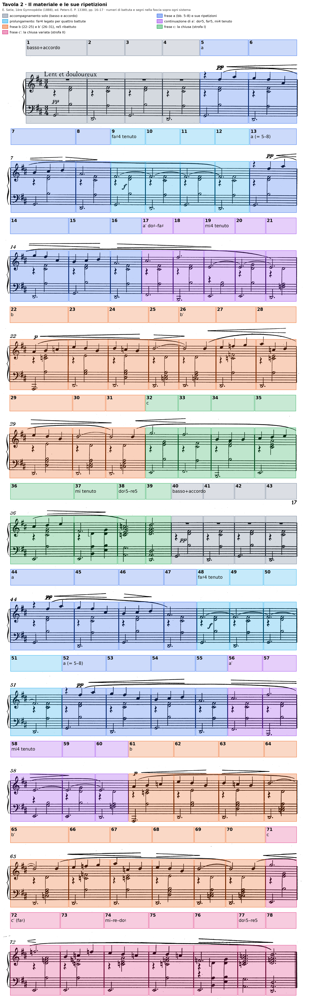
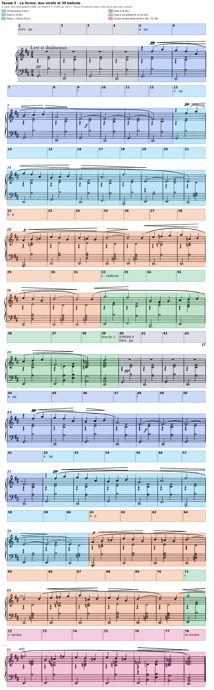

L’analisi integrale scritta della prima Gymnopédie (1888): la sintassi di una danza tonale, la dominante presente come moto del basso e assente come sensibile.
l’accordo singolo rimane come isolato, sospeso dall’obbligo di risolversi
E. Surian, Manuale di storia della musica, vol. IV, p. 33, sulle prime composizioni di Satie
Lezione di due ore. Seconda ora: Analisi: Bartók, «In modo lidio» e «Scala di cinque note». I compiti per casa sono alla fine.
B4Oltre la tonalità: i modi diatonici, pp. 238–240; le successioni armoniche modali, p. 241. B3 Accordi di undicesima e tredicesima, p. 56.
D. D’Urso, C. Bertolini, Il linguaggio della musica, 5° anno (Mondadori Education 2022).
La prova di tipo A chiede l’analisi di una composizione, o di una sua parte significativa, con la sua contestualizzazione storico-culturale; il testo si scrive in prosa continua nell’ordine dei quattro piani. Per la Pavane l’asse dell’analisi era una cadenza negata e concessa, per la Cathédrale una curva di sonorità; qui l’asse è la dominante che resta come moto del basso e perde la sensibile, e ogni piano va riferito a essa.
1. Ogni affermazione porta la sua battuta; le altezze con l’indice d’ottava (do4 = do centrale). 2. Gli accordi con le note, dal basso, e con la specie; il grado solo se il centro è dichiarato. 3. Prima il dato, poi l’interpretazione; due letture, se la partitura le ammette. 4. Le indicazioni dell’autore in corsivo e in francese. 5. Le fonti con autore, titolo e pagina.
Descrivere la Gymnopédie con aggettivi (statica, ipnotica, sospesa) invece che con i dati che producono quell’effetto. La staticità si dimostra: due accordi che si alternano per sedici battute, nessun tritono nell’accompagnamento, una sola dissonanza di tritono fra melodia e basso, la cadenza senza sensibile.
1. Prima dell’ascolto, numerare le battute dell’edizione Peters: sono 78, cioè 6 + 7 + 8 + 7 + 7 a p. 16 e 8 + 7 + 7 + 7 + 7 + 7 a p. 17; i numeri di sistema stampati (1, 7, 14, 22…) servono da controllo.
2. Durante l’ascolto, scrivere sopra il rigo grave il nome del basso ogni volta che smette di alternare sol e re, e segnare con un cerchio le battute in cui compare un suono estraneo all’armatura.
Erik Satie, 1ère Gymnopédie, per pianoforte, «à Mademoiselle Jeanne de Bret» · edizione Peters (E. P. 13380), pp. 16–17 · 3/4, due diesis in chiave, Lent et douloureux · 78 battute, numerate per l’analisi secondo i numeri di sistema stampati (1, 7, 14, 22, 29, 36, 44, 51, 58, 65, 72) e contate due volte, sistema per sistema: 6 + 7 + 8 + 7 + 7 battute a p. 16, 8 + 7 + 7 + 7 + 7 + 7 a p. 17. Le altezze sono indicate con l’indice d’ottava internazionale (do4 = do centrale).
La prima Gymnopédie conserva quasi intatta la sintassi di una danza tonale: un metro ternario che non cambia mai, un accompagnamento di basso e accordo ripetuto in quasi tutte le settantotto battute, frasi di quattro e di otto battute, una chiusa che percorre il giro di quinte fino alla tonica di re. Ciò che Satie sottrae è la funzione degli accordi che riempiono questa sintassi. Le prime sedici battute alternano due settime di quarta specie, nessuna delle quali contiene il tritono; la sezione centrale abbandona la scala di re maggiore per la collezione dei tasti bianchi sopra un pedale di re; la cadenza conclusiva arriva alla tonica attraverso una dominante priva di sensibile. L’analisi che segue mostra che la dominante, nel brano, esiste come movimento del basso e non come accordo: il giro la–re c’è, il do♯ che lo renderebbe una cadenza perfetta manca. La seconda metà del pezzo ripete la prima nota per nota e cambia soltanto le ultime sette battute, dove il fa♯ diventa fa♮ e la chiusa approda al re minore; la sola differenza fra le due strofe riguarda dunque il modo della tonica, non la sua funzione.
Piano 1 · I parametri. I due accordi delle bb. 1–4, con le note dal basso e la specie: che cosa hanno in comune, che cosa manca a entrambi perché uno sia la dominante dell’altro. I suoni della melodia delle bb. 5–21 e quello che manca fino alla b. 19. Il primo suono estraneo all’armatura e la battuta. L’accordo della b. 38, nota per nota.
Piano 2 · Il materiale. Ciò che non cambia mai; le battute in cui il basso smette di alternare sol e re.
Piano 3 · La forma. Le sezioni della prima strofa, con le battute; dove comincia la seconda e dove se ne allontana.
Piano 4 · Lo stile e la storia. L’anno; che cosa distingue la staticità di Satie da quella dei Préludes di Debussy analizzati nell’unità 3.
La scheda si corregge piano per piano nelle slide seguenti, con i passi trascritti, le tavole e la prosa dell’analisi modello; corretta, è la traccia del testo da scrivere a casa.
Le bb. 1–4, pp, espongono da sole l’accompagnamento. Sul primo movimento il basso tiene una minima puntata, sol2 nelle battute dispari e re2 nelle pari; sul secondo entra un accordo di minima che occupa i due righi: si3–re4–fa♯4 sopra il sol, la3–do♯4–fa♯4 sopra il re. Gli accordi che ne risultano sono sol–si–re–fa♯ e re–la–do♯–fa♯, due settime di quarta specie (accordi di settima maggiore) complete, allo stato fondamentale. Le due sonorità hanno in comune il fa♯4, che resta fermo nella stessa voce, e si succedono per moto di quarta al basso. Nessuna delle due contiene il tritono, e questo dato basta a escluderle da un rapporto di dominante e tonica: Persichetti, citato da D’Urso e Bertolini, osserva che le armonie con il tritono «suonano come accordi dominantici», e indica proprio nella loro assenza la condizione del colore modale (Il linguaggio della musica, 5° anno, p. 241). L’armatura è quella di re maggiore, ma il basso comincia sul sol e vi ritorna in ogni battuta dispari; la collezione impiegata, sette suoni con il do♯, è la scala di re maggiore non meno che il modo lidio di sol, che D’Urso e Bertolini descrivono come una scala maggiore con il quarto grado innalzato (p. 240). Le prime sedici battute non decidono fra le due letture. Il centro di re è sostenuto dall’armatura, dalla melodia, che si posa sul la4 e sul fa♯4 sopra l’accordo di re (bb. 8 e 12), e dalla conclusione delle due strofe; il centro di sol, dalla posizione metrica e dall’inizio del brano. Surian elenca fra i tratti delle prime composizioni di Satie «le armonie con spiccate inflessioni modali» e «le successioni di accordi senza rapporti tra di loro», nelle quali «l’accordo singolo rimane come isolato, sospeso dall’obbligo di risolversi» (Manuale di storia della musica, vol. IV, p. 33): le bb. 1–16 realizzano il principio con due soli accordi.
La melodia, entrata alla b. 5, impiega sei suoni della scala (fa♯, la, sol, do♯, si, re) e non tocca il mi fino alla b. 19. Il tritono compare soltanto come urto fra melodia e accompagnamento: il sol5 sopra l’accordo di re (bb. 6 e 14) e il do♯5 sopra l’accordo di sol (bb. 7 e 15) formano con il do♯4 e con il sol2 la quarta eccedente sol–do♯, cioè l’intervallo che caratterizza il lidio di sol. Alla b. 17 l’alternanza si interrompe. Il basso sale al fa♯2 e scende al si1, e sopra di essi la mano destra forma le triadi di fa♯ minore (la3–do♯4–fa♯4) e di si minore (si3–re4–fa♯4), mentre la melodia tocca il do♯5 e il fa♯5. Alla b. 19 il basso scende al mi2, la mano sinistra porta sol3–si3 e la melodia cade al mi4, una nona sotto il fa♯5 precedente, e lo tiene per tre battute legate sopra il mi minore della b. 19, il mi minore con settima della b. 20 (mi2, si3, re4–sol4) e il re minore della b. 21 (re2, fa3–la3, re4). Il basso percorre così fa♯–si–mi per quinte discendenti e poi scende di un tono, e il fa♮3 della b. 21, primo suono estraneo all’armatura, introduce il modo minore sulla stessa tonica. Sul re minore il mi4 della melodia, tenuto dalla b. 19, diventa una nona aggiunta: la frase si ferma su un accordo di tonica minore arricchito da un suono che non risolve.

La tavola riporta su tutta la prima strofa e sulla chiusa le collezioni e gli accordi che le quattro slide delle altezze descrivono passo per passo.
La sezione delle bb. 22–31 cambia collezione. Alla b. 22, p, il basso scende al la1 e la mano destra porta la triade di la minore, la3–do♮4–mi4; la melodia sale la4–si4–do♮5. Dalla b. 23 alla b. 31 il basso tiene il re2 in ogni battuta, e sopra di esso si succedono quattro sonorità: re–sol–si–mi (bb. 23–24 e 29, con il re3 raddoppiato alle bb. 24 e 29), re–do–mi–la–re (bb. 25 e 30), re–do–sol–la–re (bb. 26 e 31), re–la–do–fa (b. 27) e re–la–do–mi (b. 28). Il do♮ è costante, il fa♮ ritorna alla b. 27 nell’accordo e nella melodia (mi5–fa5–sol5), il si è naturale. I suoni sono quelli dei tasti bianchi, e sopra il pedale di re formano il modo dorico, che il libro di testo descrive come minore naturale con il sesto grado innalzato (p. 240). Nessuno degli accordi è una triade di re: la tonica è affermata soltanto dal basso, e le sonorità sopra di esso si leggono meglio come accordi del pedale che come gradi. Re–sol–si–mi è una triade di sol con la sesta mi, o un mi minore con settima al basso; re–do–mi–la una triade di la minore sopra il re, o una sonorità di re con settima e nona priva della terza; re–do–sol–la una settima con la quarta al posto della terza. La partitura non obbliga a scegliere, e la stessa indecisione è il dato: per nove battute nessuna terza qualifica il re come maggiore o minore, se non il fa♮ di passaggio della b. 27.
Le bb. 32–39 riportano la scala di re maggiore e la cadenza. Il basso procede mi2 (b. 32), fa♯2 (b. 33), si1 (b. 34), mi2 (bb. 35–37), la2 (b. 38), re2 (b. 39), e porta sopra di sé il mi minore (b. 32), il fa♯ minore (b. 33), il si minore (b. 34), la triade di la maggiore in secondo rivolto (do♯4–mi4–la4 sopra il mi2, b. 35), la sonorità mi–la–do♯–fa♯–la (b. 36), che si legge come settima di seconda specie su fa♯ con la settima al basso o come triade di la con la sesta aggiunta, e, sopra il mi tenuto della b. 37, due accordi di semiminima, si–la–re e mi–si–re–sol. Letti come gradi di re, i bassi delle bb. 32–39 danno ii–iii–vi–ii–V–I: dopo il passo mi–fa♯, una catena di quinte discendenti, si–mi–la–re, che è lo schema della cadenza tonale. L’accordo della b. 38, tenuto per l’intera battuta, contiene però la2 al basso, sol3, do♮4, re4, fa♯4, la4 e do♮5. Sopra il la la terza è minore, la settima sol è presente, re e fa♯ vi si aggiungono come undicesima e tredicesima. D’Urso e Bertolini osservano che l’undicesima e la tredicesima, nel repertorio fino al tardo Ottocento, «derivano da un pedale o dall’aggiunta di note di figurazione a una settima o a una triade» (p. 56); qui le note aggiunte non risolvono e restano nell’accordo, l’aggregato non ha la sensibile, e la triade di re maggiore della b. 39 (re2–la2–re3, re4–fa♯4–la4–re5) arriva dopo un do♮ che sale al re per tono nella voce superiore. Due letture sono possibili, e un’analisi d’esame deve esporle entrambe. Secondo la prima, la b. 38 è un quinto grado minore con settima, undicesima e tredicesima, dunque una dominante modale, e la cadenza è quella del modo misolidio, dove il settimo grado abbassato sale alla finale. Secondo la seconda, i suoni superiori re–fa♯–la–do sono una settima di prima specie su re sovrapposta al la del basso, cioè una tonica che anticipa sé stessa con la settima minore e risolve poi sulla triade. In entrambe le letture il do♯ manca, e l’unico accordo dell’accompagnamento che nella prima strofa contenga un tritono, do♮–fa♯, non porta il tritono della dominante di re (do♯–sol).
La seconda strofa (bb. 40–78) ripete le bb. 1–39 fino alla b. 71 e varia le ultime sette battute. Dalla b. 71 il basso resta sul mi2 per sei battute. Alla b. 72 la melodia tiene fa♮5 al posto del fa♯5 della b. 33, sopra la3 e re4–fa♮4–la4: una triade di re minore sopra il mi. La b. 73 porta do♮4–fa♮4 sopra la3, cioè la settima di quarta specie fa–la–do–mi con il mi al basso; la b. 74 il la minore in secondo rivolto (do♮4–mi4–la4), che sostituisce il la maggiore della b. 35; la b. 75 la sonorità mi–la–do♮–fa♮–la, che trasforma quella della b. 36 abbassando di un semitono il do e il fa. La b. 76 ripete la b. 37 con il fa♮4 nella melodia, la b. 77 ripete alla lettera la b. 38, e la b. 78 chiude sulla triade di re minore, re2–la2–re3 e re4–fa♮4–la4–re5. Lo stesso accordo della b. 38, con il suo fa♯, approda una volta al maggiore e una volta al minore: la penultima battuta non decide il modo della tonica, e la tonica lo cambia senza che cambi la preparazione.
Nelle bb. 1–21 le frasi si chiudono per sospensione melodica: sul la4 sopra l’accordo di re (b. 8), sul fa♯4 tenuto per quattro battute (bb. 9–12), sul mi4 tenuto sopra il mi minore e il re minore (bb. 19–21). Nelle bb. 22–31 la melodia si posa sul re5 sopra il pedale di re (bb. 25 e 30) mentre gli accordi superiori contengono do e la, ma non il fa♯: è un arrivo sulla finale privo di dominante, una cadenza modale per moto melodico. La sola cadenza armonica è quella delle bb. 37–39, ii⁷–v–I, nella quale la dominante ha la terza minore e la sensibile non compare; la voce superiore conclude con il passo do♮5–re5. La chiusa della seconda strofa (bb. 76–78) ha la stessa preparazione e un’altra tonica, v–i. Il brano non contiene dunque una sola cadenza perfetta: contiene due volte lo schema di una cadenza perfetta privato del suono che la definisce.
La melodia procede per grado congiunto e per salti di terza e di quarta, in semiminime e minime puntate. La prima frase (bb. 5–8) si apre sul secondo movimento, fa♯5–la5, scende sol5–fa♯5–do♯5, risale si4–do♯5–re5 e si ferma sul la4 dopo un salto di quarta: un arco di quattro battute nell’ambito di un’ottava, la4–la5. Il fa♯4 delle bb. 9–12, legato per quattro battute, la prolunga senza articolarla. La seconda frase (bb. 13–21) ripete alla lettera le prime quattro battute e prosegue con tre note lunghe, do♯5, fa♯5 e mi4: il salto discendente di nona fra le bb. 18 e 19 porta la melodia nel registro dell’accompagnamento, e il mi4 resta per tre battute sotto il sol4 dell’accordo della b. 20. La frase delle bb. 22–25 comincia sul primo movimento, sale la4–si4–do♮5, scende per terze e gradi fino al si4 e chiude sul re5; quella delle bb. 26–30 parte dal re5 ribattuto sull’ultimo movimento della b. 26, sale mi5–fa5–sol5 fino al la5 della b. 28 e ridiscende al re5. L’ultima frase (bb. 31–39) ha il profilo più ampio del brano: dal sol5 della b. 32 scende per gradi e per salti fino al fa♯4 della b. 37, una nona minore sotto, e risale alla finale re5 attraverso il do♮5 dell’accordo della b. 38. Il culmine, la5, è toccato tre volte (bb. 5, 13 e 28), sempre per salto ascendente e subito abbandonato; la nota più grave della melodia, mi4, cade nel punto di massima distanza dalla scala di re maggiore (bb. 19–21).
L’accompagnamento ripete in quasi ogni battuta la stessa figura, minima puntata al basso sul primo movimento e accordo di minima sul secondo; la varia soltanto alle bb. 37 e 76, dove due accordi di semiminima occupano il secondo e il terzo movimento, e lo sospende nelle bb. 38–39 e 77–78, dove tutte le parti tengono un accordo di minima puntata. La pulsazione ternaria non conosce sincopi né cambi di metro, e il primo movimento di ogni battuta è sempre segnato dal basso. La melodia, invece, comincia spesso dopo il primo movimento (bb. 5 e 13) o sull’ultimo (bb. 26 e 31), e le sue note lunghe scavalcano la stanghetta per legatura (bb. 9–12, 19–21, 25–26, 30–31). Surian indica fra i tratti di queste composizioni «la monotonia della pulsazione ritmica» (p. 33); l’unica indicazione agogica del pezzo è quella iniziale, Lent et douloureux, che non viene mai revocata.
La scrittura dispone tre strati in tre registri: il basso fra il la1 e il la2, l’accordo di norma fra il la3 e il la4, la melodia fra il mi4 e il la5. Gli accordi sono distribuiti fra le due mani (il suono più grave sul rigo inferiore, gli altri sul superiore) e restano entro l’ambito di una nona. Fra il basso e l’accordo resta di norma un vuoto di più di un’ottava (sol2–si3 alla b. 1); si riduce soltanto sopra il pedale di re (bb. 24–31), dove l’accordo scende fino al do3 e si addensa a cinque suoni, e nella chiusa della b. 39, dove il basso raddoppia re2–la2–re3. Tre volte la melodia scende sotto la voce superiore dell’accordo (bb. 19–21, 37, 76): nei punti in cui la scala di re maggiore è sospesa o la cadenza si prepara, gli strati si avvicinano.
Le indicazioni sono poche e tutte collocate all’inizio delle frasi: pp alle bb. 1, 5 e 13, p alla b. 22, e lo stesso nella seconda strofa (bb. 40, 44, 52, 61). La stampa Peters porta inoltre una f isolata alla b. 9 e alla b. 48, sotto il fa♯4 tenuto, senza indicazione di ritorno al piano; è un dato dell’edizione che l’analisi registra senza poterlo spiegare con il resto della partitura. Le forcelle di crescendo e diminuendo poste sopra le frasi seguono il profilo della melodia.

Il materiale si riduce a tre elementi: la figura d’accompagnamento, invariata per ritmo e registro; le due settime di quarta specie delle bb. 1–16; quattro frasi melodiche che non si sviluppano ma si ripetono o si prolungano. La prima frase ritorna identica alle bb. 13–16 e, nella seconda strofa, alle bb. 44–47 e 52–55; la seconda, terza e quarta frase ritornano alle bb. 56–60, 61–70 e 71–76 con le stesse altezze, salvo la variante finale. Surian annovera fra i caratteri delle Gymnopédies «la pressoché totale assenza di un qualsivoglia sviluppo tematico» (p. 33), e Salvetti descrive il procedimento compositivo di Satie come «del tutto estraneo al principio di sviluppo tradizionale»: brevi idee «semplicemente reiterate, finché altre ne prendono il posto senza consequenzialità apparente» (La nascita del Novecento, p. 101). Nella prima Gymnopédie la consequenzialità non manca del tutto, perché le frasi si concatenano per nota comune e per grado: il fa♯ è comune ai due accordi delle bb. 1–16 e alle triadi delle bb. 17–18; il mi4 tenuto lega il mi minore al re minore (bb. 19–21); il re del basso, già tonica alla b. 21, diventa pedale per le bb. 23–31.
Le trasformazioni sono di due specie. La prima è il cambiamento del basso sotto una figura immobile: il fa♯4 della melodia resta per quattro battute sopra l’alternanza sol–re (bb. 9–12), il mi4 sopra mi–mi–re (bb. 19–21), il re5 sopra il pedale di re mentre le sonorità superiori cambiano (bb. 25–26, 30–31). La seconda è la mutazione di un solo suono: il fa♯ che diventa fa♮ (bb. 21, 27, 72–76) e il do♯ che diventa do♮ (bb. 22–31, 38, 73–75). Sono le note che D’Urso e Bertolini chiamano modali, quelle che distinguono un modo dalla scala di riferimento (p. 240): il do♮ è il settimo grado abbassato del misolidio di re, il fa♮ la terza minore del dorico e dell’eolio. L’intera seconda strofa si spiega così come una ripetizione nella quale, alle ultime sette battute, le due note modali prendono il posto della terza e della sensibile della tonalità.

Il brano è formato da due strofe di trentanove battute, la seconda identica alla prima fino alla b. 71. Ciascuna strofa comprende un’introduzione di quattro battute e quattro frasi, le prime due nella scala di re maggiore, la terza nella collezione dei tasti bianchi sopra il pedale di re, la quarta di nuovo in re con la cadenza.
| Sezione | Battute | N. bb. | Materiale | Centro / collezione | Indicazioni |
|---|---|---|---|---|---|
| Introduzione | 1–4 | 4 | basso e accordo: sol–si–re–fa♯ / re–la–do♯–fa♯ | scala di re maggiore (sol lidio / re ionio) | Lent et douloureux, pp |
| Frase a | 5–12 | 8 | melodia fa♯–la… la (5–8), fa♯4 tenuto (9–12), sopra la stessa alternanza | idem | pp, forcelle; f (9) |
| Frase a′ | 13–21 | 9 | 13–16 = 5–8; do♯5, fa♯5 su fa♯ min. e si min. (17–18); mi4 tenuto su mi min., mi min.⁷, re min. (19–21) | re maggiore; fa♮ (21) | pp |
| Frase b | 22–31 | 10 | la min. (22); pedale di re (23–31); due semifrasi: 22–25, 26–30, con il re5 ribattuto | tasti bianchi su re: re dorico (do♮, fa♮ alla b. 27) | p, forcelle |
| Frase c (chiusa) | 32–39 | 8 | basso mi–fa♯–si–mi–la–re; v con settima, undicesima e tredicesima → I | re maggiore; do♮ (38) | — |
| Strofa II | 40–71 | 32 | = bb. 1–32 | come sopra | pp (40, 44, 52); f (48); p (61) |
| Chiusa variata | 72–78 | 7 | variante delle bb. 33–39: pedale di mi (71–76), fa♮ e do♮; v → i | re minore (dorico) | — |
Le proporzioni interne della strofa (4 + 8 + 9 + 10 + 8) sono quasi regolari: le frasi si allungano per prolungamento della nota finale (bb. 9–12, 19–21) o per ripetizione della semifrase (bb. 26–30), non per inserti. La frase centrale è la più lunga e la sola che cambi collezione; la chiusa è la sola che percorra un giro di quinte. Se la successione re maggiore – re dorico – re maggiore suggerisce una piccola forma ternaria dentro la strofa, il ritorno della scala iniziale alla b. 32 non riporta però il materiale iniziale, e la terza frase non è una ripresa: la strofa si legge meglio come una catena di frasi che si chiude con l’unica cadenza del brano. La forma complessiva, A–A′, è quella di una danza strofica nella quale la seconda esposizione cambia soltanto la conclusione. Galli ricorda che il titolo designa le danze accompagnate da canti che si svolgevano nell’antica Grecia (Storia della musica 3, p. 302); la partitura non contiene alcun riferimento descrittivo, e l’unica relazione verificabile con il titolo è il carattere di danza lenta, ternaria e ripetitiva.
Le tre Gymnopédies furono composte nel 1888 (Surian, vol. IV, p. 33; Galli, p. 302), ventidue anni prima del primo libro dei Préludes di Debussy, e Debussy ne orchestrò la prima e la terza nel 1896 (Surian, p. 35). Salvetti colloca Satie fra i precursori dell’avanguardia parigina e osserva che le sue prime composizioni pianistiche presentano «melodie quasi totalmente diatoniche, a grado congiunto, a piccoli incisi ritmicamente costanti» e un procedimento compositivo estraneo allo sviluppo (pp. 100–101); ricorda anche l’ammirazione di Ravel per le Gymnopédies (p. 102). Surian ne sottolinea l’intento di «generale staticità» e il fatto che questa scrittura prefiguri la ricerca armonica di Debussy (pp. 33–35).
Nella prima Gymnopédie la staticità non nasce, come nei Préludes di Debussy, dall’abbandono della triade o della scala diatonica: gli accordi sono settime per terze sovrapposte, la scala è quella di re maggiore, la cadenza conserva il percorso del basso. Ciò che manca è il rapporto gerarchico fra gli accordi. Le due settime iniziali sono quelle che la teoria tonale colloca sul primo e sul quarto grado, cioè gli accordi meno direzionali della tonalità maggiore; la sezione centrale sostituisce il cambiamento armonico con un pedale; la cadenza finale toglie alla dominante la sensibile. È lo stesso principio che il libro di testo, sulla scorta di Persichetti, indica per conferire a un brano il colore di un modo, evitare le armonie con il tritono e affermare il centro con gli accordi che contengono la nota modale (p. 241), applicato qui dentro una tonalità che resta riconoscibile. Il recupero dei modi, che D’Urso e Bertolini indicano come uno dei primi mezzi adottati dai compositori per superare la tonalità (p. 238), avviene nella Gymnopédie per sottrazione: non si cambia il sistema, si toglie il suono che lo fa funzionare. Kostka osserva che gli accordi di nona, di undicesima e di tredicesima possono comparire sia in contesti funzionali sia in contesti non funzionali, e che nel secondo caso le regole tradizionali della risoluzione non si applicano (Tonal Harmony, 7ª ed., p. 464): la b. 38 è un caso limite, perché l’accordo sta nel posto della dominante funzionale e ne conserva il basso, ma non ne ha la terza.
I dati dei quattro piani convergono su un punto. La sintassi della prima Gymnopédie è quella di una danza tonale (metro invariato, frasi regolari, ripetizione strofica, cadenza preparata dal giro di quinte), e il suo vocabolario armonico è privato, punto per punto, di ciò che quella sintassi presuppone: le settime non risolvono, negli accordi il tritono manca fino alla b. 38, la sezione centrale sostituisce i gradi con un pedale, la dominante ha la terza minore. La forma rende udibile questa sottrazione, perché la seconda strofa, identica alla prima, cambia soltanto il modo della tonica finale, senza che la preparazione cambi. Restano aperte due questioni, che un’analisi d’esame può dichiarare senza risolvere: il centro delle bb. 1–16, che l’armatura e la chiusa assegnano al re e la posizione metrica al sol, e lo statuto dell’accordo della b. 38, che si legge come dominante modale o come tonica con la settima sopra il quinto grado; la partitura, che porta la stessa sonorità sia al re maggiore sia al re minore, sostiene entrambe le letture.
E. Satie, 3 Gymnopédies, Edition Peters, E. P. 13380,
pp. 16–17.
E. Surian, Manuale di storia della musica, vol. IV, Il
Novecento, cap. 29 «La musica in Francia nel primo Novecento»,
pp. 33–35.
G. Salvetti, Storia della musica, vol. 10, La nascita
del Novecento, pp. 100–102.
C. Galli, Storia della musica 3. Dal Romanticismo a oggi,
UdA 1 «La Francia nella prima metà del XX secolo», p. 302.
D. D’Urso, C. Bertolini, Il linguaggio della musica, 5°
anno, Mondadori Education 2022: pp. 56–57 (undicesima e tredicesima di
dominante); p. 238 (i modi diatonici come mezzo per superare la
tonalità); p. 240 (lidio, dorico, note modali); p. 241 (successioni
armoniche modali, da V. Persichetti).
S. Kostka, Tonal Harmony, 7ª ed., McGraw-Hill, cap. 26,
p. 464.
Intestazione: autore, titolo, organico, anno, edizione, numero di battute e come sono state contate. Introduzione: la tesi, in poche righe. 1–4: i quattro piani in prosa continua, la tabella nel terzo. Conclusione: come i dati si sostengono a vicenda, e che cosa resta aperto.
Scrivere il paragrafo del primo piano sulle bb. 17–21, in sei-otto righe: il basso battuta per battuta, gli accordi della mano destra con le note, il punto più acuto e il punto più grave della melodia, il primo suono estraneo all’armatura, il tipo di chiusa; una frase che collega il passo alle due chiuse delle strofe (bb. 39 e 78). Si finisce a casa, dentro il testo completo.
Due settime maggiori sul sol e sul re, senza tritono, che si alternano per sedici battute (bb. 1–16); la prima uscita, con il fa♮ e la nona aggiunta (bb. 17–21); il dorico sopra il pedale di re (bb. 22–31); la catena di quinte ii–iii–vi–ii–V–I con la dominante senza sensibile (bb. 32–39); la stessa preparazione verso il re minore (bb. 71–78).
Quando la sintassi di un brano è tonale e l’effetto non lo è, l’analisi cerca il suono che manca: qui il tritono nell’accompagnamento e la sensibile nella cadenza.
La lezione si chiude con il solfeggio: si canta la melodia delle bb. 5–12 sopra l’alternanza sol–re suonata al pianoforte, poi la voce superiore delle bb. 37–39 e 76–78 (fa♯4 e fa♮4, do♮5–re5). Le due ore seguenti sono la V2, la verifica scritta del 30/11.
L’analisi modello completa, nella forma in cui si consegna (circa 3700 parole). Si apre dopo la consegna del testo scritto a casa; è anche in 03_Materiali/Analisi modello 5a.
Due pezzi del Mikrokosmos che dichiarano nel titolo il proprio materiale: il lidio, letto all’ascolto e sulla partitura del n. 59, e la scala pentatonica, che nella «Scala di cinque note» si divide fra le due mani.
La scoperta e il reimpiego (non già attraverso materiali citazioni, ma piuttosto come modelli di una nuova musica) del canto popolare è per Bartók non soltanto un fenomeno artistico, ma anche morale e civile.
M. Mila, L’arte di Béla Bartók, p. 38, citato in C. Galli, Storia della musica 3, p. 365
B4Oltre la tonalità, Lezioni 17 e 18, pp. 244–247 · D. D’Urso, C. Bertolini, Il linguaggio della musica, 5° anno (Mondadori Education 2022).
Mikrokosmos. Raccolta di 153 brani per pianoforte in sei volumi, scritti fra il 1926 e il 1939, ordinati per difficoltà e concepiti con intento pedagogico; affrontano questioni di tecnica pianistica e insieme «soluzioni di tecnica compositiva della musica moderna» (p. 244).
Nota modale. Il suono che distingue un modo dalla scala maggiore o minore di riferimento: nel lidio il quarto grado innalzato (p. 240).
Cromatismo polimodale. Sovrapposizione di modi diversi sulla stessa finale: ogni linea è diatonica nel proprio modo, e il cromatismo nasce soltanto dall’incontro delle parti (p. 245).
Scala pentatonica anemitonica. Cinque suoni senza semitoni, che alternano toni e terze minori; la diversa posizione delle due terze minori dà cinque modi, sui suoni do, re, mi, sol, la della scala modello (p. 246).
Chiamare «pentatonica» qualunque melodia di cinque suoni. Cinque suoni per grado congiunto, come il pentacordo fa–sol–la–si–do, contengono semitoni e appartengono a un modo diatonico; la pentatonica anemitonica è definita dall’assenza del semitono e quindi del tritono.
Il pezzo si ascolta senza partitura. Si annota: 1. il suono su cui si fermano le frasi e quello su cui il pezzo finisce; 2. se il quarto grado sopra quel suono è giusto o eccedente; 3. se le due mani suonano insieme la stessa linea, in imitazione o in parti indipendenti.
Il modo si stabilisce dalla finalis e non dalla scala: lo stesso insieme di tasti bianchi è fa lidio se le frasi si posano sul fa, do maggiore se si posano sul do. La nota modale va cercata nei punti in cui una melodia tonale avrebbe il quarto grado giusto, cioè nel salire verso la quinta e nelle cadenze. La verifica sulla partitura si fa nella slide seguente, sul n. 59, che impiega nella mano sinistra lo stesso pentacordo lidio.
Le due mani si muovono ciascuna entro un pentacordo sul fa. La destra percorre fa–sol–la♭–si♭–do, i primi cinque gradi di fa minore, che D’Urso e Bertolini attribuiscono al modo eolio; la sinistra fa–sol–la–si–do, con il si♮ del lidio (p. 245). Nessuna delle due linee contiene un suono estraneo al proprio pentacordo, e ciascuna è diatonica. Il cromatismo nasce dall’incontro: la♭ e la♮ distano un movimento alla b. 1, e al primo tempo delle bb. 3 e 4 il si♮3 accentato della sinistra suona contro il si♭4 della destra, un’ottava diminuita.
La somma dei due pentacordi dà sette suoni consecutivi fra fa e do, fa–sol–la♭–la–si♭–si–do: un segmento cromatico in cui manca soltanto il fa♯. I punti d’appoggio restano due, il fa iniziale delle due mani e il do4 della sinistra (bb. 2 e 6), che occupa due volte un’intera battuta; fra l’uno e l’altro la sinistra ripete due volte la discesa si–la–sol–fa (bb. 3–4) e alla b. 5 la contrae in si–fa–si. Sull’ultimo ottavo delle bb. 1 e 5 il fa4 della destra cade sul si3: il tritono fa–si, che in una tonalità sarebbe una dominante, qui è l’intervallo fra la finale e la nota modale.
Leggere le bb. 1–5 come un passo cromatico in fa e cercarne gli accordi. Il procedimento è contrappuntistico: due linee diatoniche in due modi; nel testo d’analisi si scrivono i due pentacordi con le note e la battuta del primo urto (b. 1, la♭–la♮).
Le prime otto battute impiegano in tutte e due le mani i cinque suoni mi–sol–la–si–re, la pentatonica che il libro scrive con un diesis in chiave e legge dal mi come quinto modo (p. 246). Le frasi sono di quattro battute, ciascuna sotto una sola legatura. La seconda (bb. 5–8) trasporta la prima una quinta giusta sotto nota per nota, si4–mi5 che diventa mi4–la4, e si chiude sul mi4 sopra il mi3: è il primo arrivo sulla finale. La sinistra non imita la destra: alterna una figura di tre crome discendenti, preceduta da una pausa, e una minima, e la prima nota di ogni figura scende si3, sol3, mi3, re3 (bb. 1, 3, 5, 7), fino al la2 della b. 7.
La terza frase (bb. 9–12) ripete alla lettera la prima nella destra. Cambia la sinistra, che sale invece di scendere e introduce alla b. 10, con l’accento, il fa♯4: i suoni la–si–re–fa♯ appartengono alla pentatonica di re (re–mi–fa♯–la–si), che si trova una quinta sopra quella di sol sul circolo e ne condivide quattro suoni. Il sol, l’unico suono che la distingue, non compare nella destra delle bb. 9–12, e le due collezioni non entrano in conflitto. La stessa melodia riceve così un fondamento diverso senza che una sola delle sue note cambi.
Dire che alla b. 10 il pezzo «modula a re». Non c’è cadenza, la destra resta identica e la frase si chiude ancora sul si4: cambia la collezione di una sola parte, e lo si scrive così, con il suono nuovo e la battuta.
Nel n. 59 due pentacordi sul fa, eolio nella destra e lidio nella sinistra, producono un cromatismo che nessuna delle due linee contiene. Nella «Scala di cinque note» la stessa melodia pentatonica passa, alla b. 10, sopra una sinistra che usa la collezione vicina, e la frase 2 trasporta la frase 1 una quinta sotto.
Si scrive la collezione di ciascuna parte, con le note, e la battuta in cui cambia; poi la finale e il modo; infine i punti in cui le parti si urtano. Il nome della scala non basta: si scrivono i suoni che lo fanno dire.
La lezione si chiude con il solfeggio: si canta la destra delle bb. 1–8 della «Scala di cinque note», poi la sinistra del n. 59 sopra il fa tenuto. La lezione seguente analizza «Quinte diminuite» e il ritmo bulgaro.
Compiti per la prossima volta
Sulla sinistra data scrivi la destra, otto battute, alla maniera delle bb. 1–12 della «Scala di cinque note»: semiminime nelle battute dispari, crome nelle pari, una minima alle bb. 4 e 8. Soltanto la pentatonica la–do–re–mi–sol; nelle bb. 5–8, dove la sinistra usa la collezione di re, soltanto la, re e mi.
Sotto il rigo, battuta per battuta, la collezione di ciascuna mano. In una riga: perché nelle bb. 5–8 la destra non può usare il do e il sol.
Sul quaderno, a matita. La foto del lavoro finito va su Classroom. Nel Workbook: apri l’esercizio C5-U5-L1-01 ↗
Compiti per la prossima volta
n. 230 e n. 231 parlato · n. 232 e n. 233 cantato · n. 234 e n. 235 ritmico
Ogni pezzo a tempo, senza fermarti: il parlato a nomi, il cantato prendendo il primo suono dalla tastiera, il ritmico battendo la pulsazione.
Scrivi la linea del basso sul quaderno, in chiave di basso: otto battute in 6/8, la minore. Il primo suono è do. Prima il riferimento, poi tutto due volte, ogni coppia di battute due volte, il collegamento 1–4, 3–6 e 5–8, e tutto per controllare.
Il riferimento: accordo di tonica e primo suono
Il dettato · otto battute
Le sezioni (riferimento, tutto, le coppie, il collegamento) si ascoltano una per una e si ripetono quanto serve; le fasi fanno la procedura della classe, con gli annunci e le pause, da qualunque punto.
Sul quaderno scrivi in testa la sigla C5-D-U05-L1. Si corregge all’inizio della prossima lezione.
Compiti per la prossima volta
Scrivi un contrappunto di quinta specie (il contrappunto fiorito) sopra il canto fermo, in modo misolidio (finale sol): otto battute. Comincia su una consonanza perfetta, alla cadenza la sensibile sale alla finale, niente quinte e ottave consecutive.
Sul quaderno, con la sigla C5-CP-U05-L1 in testa; la foto va su Classroom.
Realizza a quattro parti il basso senza numeri: sedici battute in 4/4, fa maggiore. Trova tu l’accordo di ogni nota (la regola dell’ottava è il punto di partenza) e scrivilo sotto; poi il soprano, poi le voci interne. Accordi che puoi usare: tutto quello studiato, e una modulazione a un tono vicino. Il basso modula: trova dove, e in quale tonalità arriva.
Sul quaderno, con la sigla C5-BD-U05-L1 in testa; la foto va su Classroom.
Armonizza a quattro parti il canto dato: sedici battute in 4/4, la maggiore. Prima le cadenze, poi il basso per intero, e solo alla fine contralto e tenore. Accordi che puoi usare: tutto quello studiato, e una modulazione a un tono vicino.
Sul quaderno, con la sigla C5-CD-U05-L1 in testa; la foto va su Classroom.
Scritto: Otto battute su due collezioni pentatoniche (Workbook, esercizio C5-U5-L1-01), sul quaderno; la foto va su Classroom. Solfeggio dal quaderno di lettura: parlato n. 230, 231; cantato n. 232, 233; ritmico n. 234, 235 (a tempo, senza fermarsi). Dettato C5-D-U05-L1 dalla pagina della lezione (sezioni da ascoltare, o le fasi della procedura guidata), sul quaderno con la sigla. Contrappunto di quinta specie sul canto fermo (C5-CP-U05-L1). Basso senza numeri da realizzare a quattro parti (C5-BD-U05-L1). Canto dato da armonizzare a quattro parti (C5-CD-U05-L1).
In classe
A nomi, a tempo, con la mano che batte. Chi si ferma riparte dalla battuta dopo.
Apri il n. 226 nel quaderno di lettura ↗ chiave di contralto · 4/4 · do maggiore
In classe
Si prende il tono dalla tastiera, si canta insieme; poi a gruppi.
Apri il n. 227 nel quaderno di lettura ↗ chiave di violino · 2/4 · la minore
Apri il n. 228 nel quaderno di lettura ↗ chiave di violino · 6/8 · la minore
In classe
Tutti insieme, battendo la pulsazione. Poi a file, due battute a testa.